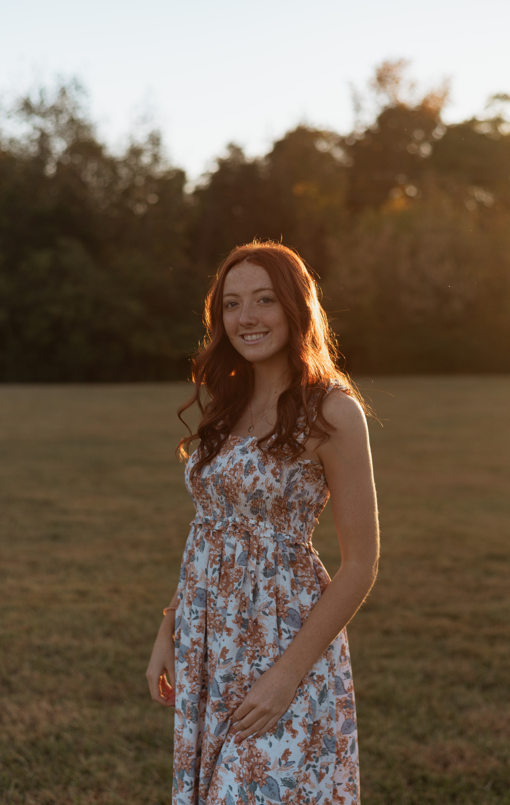
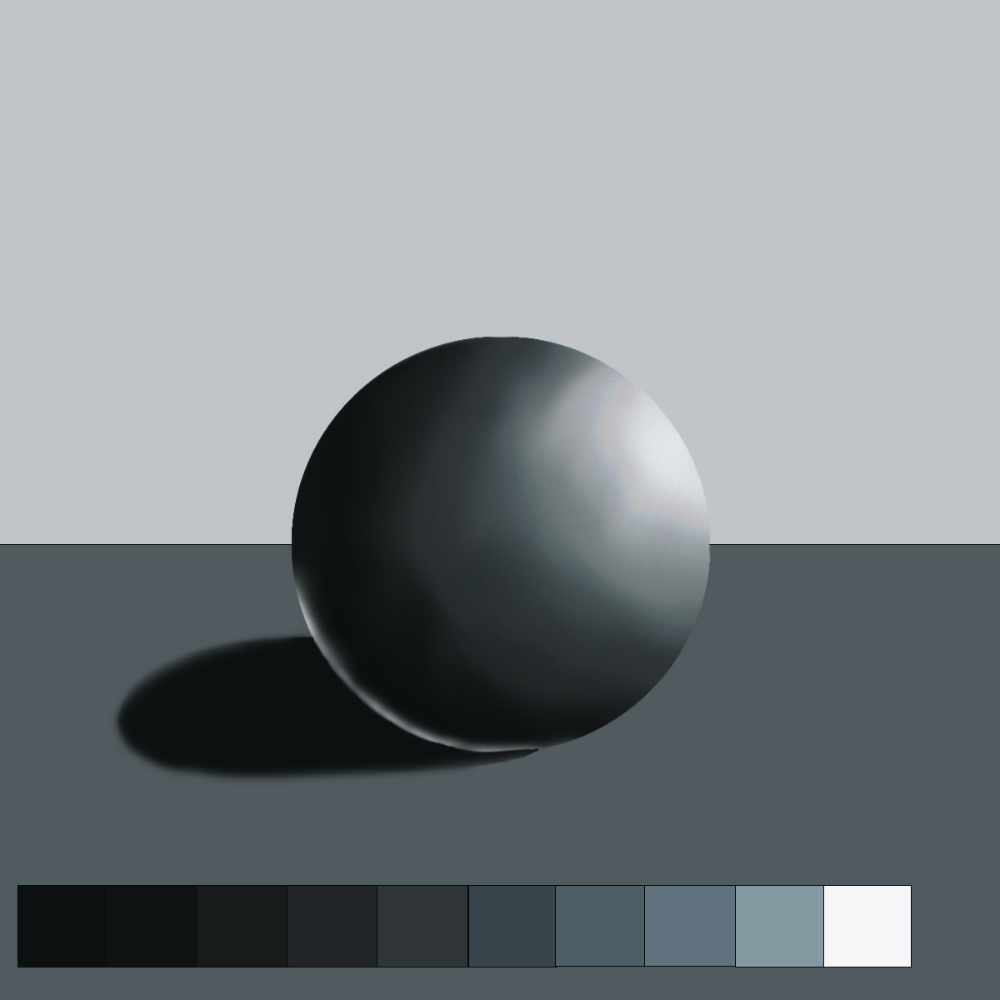

Hello there! My name is Casey Neal and I am currently studying graphic design at Chattanooga State. I have always loved creating crafts and projects and thought digital media would be a cool career! I also enjoy playing volleyball, going to the beach with my family, and hanging out with my best friends! Hope you enjoy my website!
Though I have not been making graphics for a long time, below is one of my favorites from last semester! I will be updating this page with lots of cool projects in the future. I'm looking forward to improving this year! The links below are some designers work that I really admire and strive to resemble one day!
© 2024 Casey Neal Portfolio